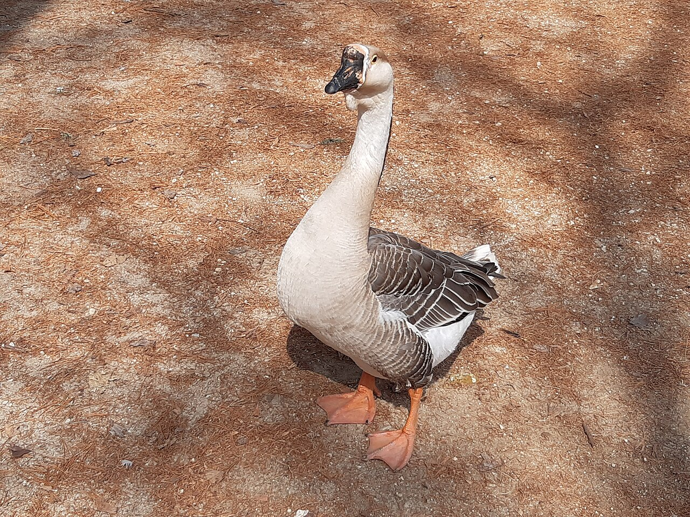
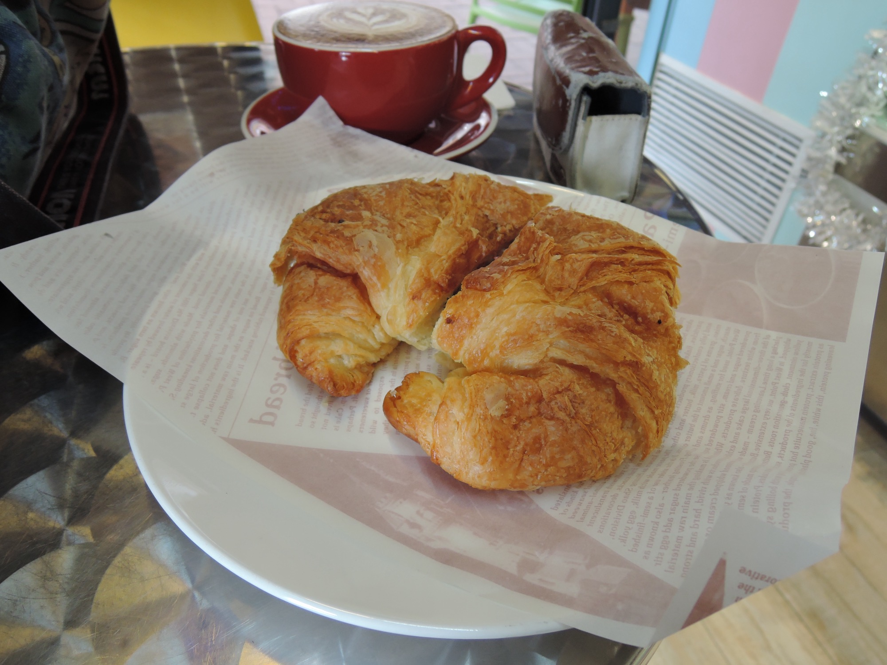
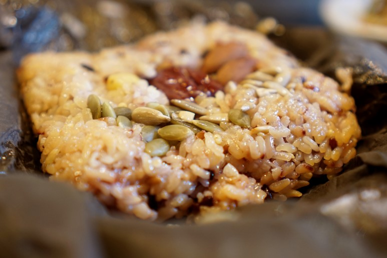
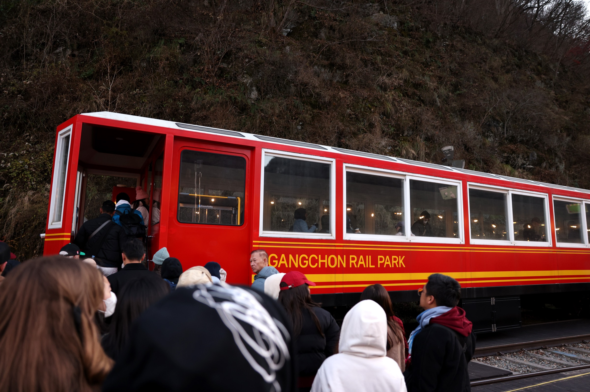
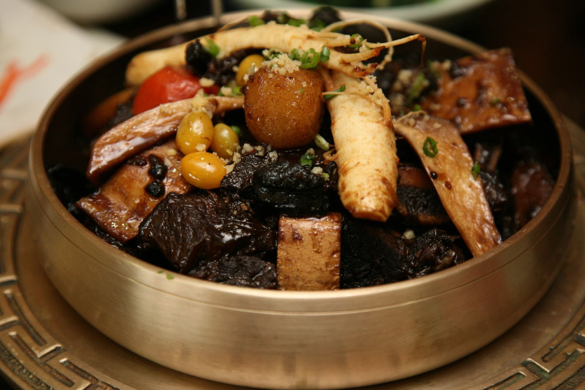

Seoul · Day 2 · 加平 Gapyeong
D224 JUN 三
加平包車一日
南怡島 · 小法國 · 晨靜 · 軌道單車
南怡島 · 小法國 · 晨靜 · 軌道單車
私家包車 door-to-door 串連加平四大點，車上冷氣抖、司機駁散點，黃昏返忠武路收結；全程零轉車。趁梅雨未到搶戶外日。
路線軸 · 6 站
忠武路 → ①南怡島 → ②小法國 → ③晨靜樹木園 → ④加平軌道單車 → 返忠武路晚餐。全日戶外為主，前一晚睇加平郡預報；暴雨主場＝晨靜樹木園溫室，包車冷氣車做緩衝；軌道單車係攰時 skip-first。
步行地圖 全日動線 每站撳 Naver 連結導航

Map真實步行地圖由 ChatGPT 生成、放 img/d2-map.png（未出圖時此處留白）；實際導航撳下面各站 Naver 連結。
Zone 1 南怡島 09:10–13:00 · 水杉道 + 島內午餐
1
09:10
必到
南怡島 남이섬
水杉大道晨光下的招牌構圖，落船即搭小火車直達島中央，松林、蓮池、白樺林平路慢行。
價 ₩16,000（入場連渡輪）+ 小火車 ₩4,000 · HKD 83 + 21步行 碼頭 4 分tag 全家
Rain薄霧水杉道仍可快影；雨大轉島內咖啡餐廳，重心移後段晨靜溫室

「只是在這杉林道中就備感舒暢，洗滌了平日繁雜忙亂的心靈，叫人流連忘返。」— 小語的幸福巧虎島 · 痞客邦
2
10:30
可選
南怡島 Swing 咖啡烘焙坊 남이섬 스윙카페&베이커리
面向北漢江的戶外露台咖啡烘焙坊，配現烤麵包與輕音樂，行島中段的歇腳補給點。
價 咖啡 ₩6,000–8,000、麵包 ₩5,000 起 · HKD 31–41步行 南怡島 6 分tag 爸爸食物
Rain店內設室內座位；雨天改島內北 Café 或 Tea House 室內避雨

「島上漫步累了，找間江邊咖啡坐下歇腳，配現烤麵包看北漢江最是悠閒。」— KKday Blog · KKday 部落格
3
午餐
12:00
12:00
必到
南門（南怡島荷葉飯韓定食）남문
島內少數正式韓定食，荷葉清香蒸飯配家常小菜，不辣、有室內座位，適合長者中午定點補給。
價 海鮮煎餅 ₩19,000 · 嫩豆腐鍋/石鍋牛肉飯 ₩14,000 · HKD 98 / 73步行 Swing 8 分tag 爸爸食物
Rain本身設室內座位，可直接做雨天午餐主場

「島內用餐選擇不算多，想坐下吃頓正式韓式定食，松林道盡頭的餐廳是穩當之選。」— KKday Blog · KKday 部落格
Zone 2 小法國 / 晨靜 13:10–16:00 · 歐風村 + 樹木園
4
13:10
必到
小法國 + 意大利村 쁘띠프랑스 이탈리아마을
《小王子》主題的歐風山村，有室內展館與半室內咖啡座，正午半室內避曬最合適。
價 通票 ₩19,500/大人（單園約 ₩10,000–12,000）· HKD 101步行 正門 2 分tag 全家
Rain室內展館與半室內咖啡座可避微雨；暴雨縮短戶外巷弄，重心移室內館

「就算不是韓劇迷，和色彩繽紛的可愛房舍拍照，也很有歐洲童話小鎮的氛圍。」— 艾莉絲・我的小旅行 · 痞客邦
5
14:50
必到
晨靜樹木園 아침고요수목원
三十三萬平方米、二十多個主題花園，六月玫瑰繡球盛放，設溫室做暴雨避雨睇花主場。
價 成人 ₩11,000 · HKD 57步行 正門 3 分tag 全家
Rain園內溫室＝全日暴雨主場，可室內睇花；另有園內咖啡座供長者歇腳

「四季皆美的庭園，每個主題園都有獨特風光，是加平一帶最值得花時間慢逛的一站。」— 西施型 獨男旅遊生活日誌 · 西施型
Zone 3 加平站 / 忠武路 16:30–21:30 · 軌道單車 + 返程晚餐
6
16:30
可選
加平軌道單車（Rail Park）가평레일파크
半自動電動軌道單車，踩十幾下即自動推進，沿八公里舊鐵道越過三十米高鐵橋黃昏絕景。
價 ₩48,000/4 人車（3 人訂 1 架）· 2 人車 ₩36,000 · HKD 249步行 Rail Park 總站 5 分tag 全家
Rain暴雨取消，改延長晨靜溫室或提早返忠武路；攰時 skip-first 那站

「半電動軌道單車不太費力，沿著舊鐵道穿過樹林與鐵橋，老少都能輕鬆享受沿途風光。」— Rowing 旅遊筆記 · 痞客邦
7
晚餐
19:30
19:30
必到
進古介（忠武路六十年韓食老舖）진고개
一九六三年開業的忠武路老字號韓食，招牌藥材黑湯燉牛肋骨不辣軟腍，最適合長者的返程定點晚餐。
價 燉牛肋骨定食約 ₩20,000–28,000/人 · HKD 104–145步行 忠武路站 6 出口 3 分tag 全家
Rain店內用餐，本身即雨天晚餐；近忠武路站，落雨可從酒店直接步行往返

「招牌燉牛肋骨肉質入口即化，帶淡淡藥材清香，是忠武路六十年的老味道。」— DiningCode 食評 · DiningCode
購物
Note加平自然日，購物從略（園內紀念品店／南怡島 café 順手即可）。
D2 · 24 Jun 三 2026 · 相+影評版 · 地圖 Naver 到場核 · 1 HKD ≈ 195 ₩ · Generated by Claude Code